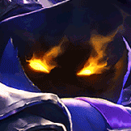
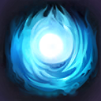
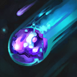

起手裝備
 幽魂之鐮
幽魂之鐮

首件雷霆改盧登，補魔力與技能加速以支援牢籠／消耗循環；後段寶珠、帽子與死墓僅是長局完成方向，保命或功能需求仍優先情境替換。


五件成裝與鞋子分開列示；起手與核心是購買路線，不是額外佔用的成裝欄位。鞋子完成時機仍依對線壓力與回城金錢調整。


保留電刑的控制後短爆發與堅定壁壘／骨甲／堅毅自保，副卓越維持牢籠頻率；不必照抄來源的全進攻支系。


保留閃現＋治療照顧雙人線；只有選角改虛弱、點燃或光盾時才執行相關連招步驟，原條件提示保留。
加點優先：E > Q > W
同路專用指南支持E>Q>W；主E縮短控制空窗，不靠搶射手補刀疊被動。
技能命中敵方英雄、參與英雄擊殺等對應條件可累積永久魔攻；Q擊殺單位另有疊層。一般普攻補刀不是無條件疊被動，輔助仍把兵線經濟留給射手。

向前發射黑暗能量，傷害路徑上的目標；用此技能擊殺單位或命中英雄可取得被動層數。7.3b修正實際射程與描述不一致；官方未列新精確值，本頁不另推算。

短暫延遲後從天際降下黑暗物質造成範圍魔法傷害；被動層數會縮短此技能冷卻。
延遲生成圓形牢籠，穿過邊緣的敵人會被暈眩；可用來封路、保排或固定二技落點。
對指定敵方英雄造成高額魔法傷害，目標已損失生命越多傷害越高，適合完成單點處決。
7.3b公告修正Q射程不符敘述，未給新數字；移除現行摘要硬寫9的說法，歷史公告9數值保留。
3技封鎖走位 → 2技預判暈眩位置 → 1技補傷害與層數 → 4技處決低血目標
牢籠不是一定要把敵人放在正中央；用邊緣封住退路，逼迫目標撞牆或停在二技落點。
3技放在主力周圍 → 虛弱敵方爆發核心（改帶時才使用） → 2技壓在突進者路線 → 1技補傷害 → 與射手同步後撤
敵人主動進場時，更容易撞上牢籠邊緣；虛弱與牢籠分開使用可延長後排安全時間。 本頁預設為閃現＋治療；本連招的虛弱僅限選角時將治療改帶虛弱且技能可用時使用。維持預設配置時略過該步。
3技封住狹窄入口 → 2技迫使敵人改道 → 1技遠距消耗 → 4技收掉殘血前排 → 保持牆後位置
先用牢籠建立禁區，再由隊友處理物件；不要為了補傷害走出牢籠提供的安全範圍。
黑暗祭祀命中敵方英雄與其他技能參與擊殺都能累積魔攻。輔助不需要搶奪射手補刀，仍可透過消耗與團戰成長。
扭曲空間能封住大片區域。即使敵人沒有撞牆，迫使其停步、繞路或與隊友分離也已產生價值。
能量爆裂適合收掉已被隊友壓低的目標。不要對滿血坦克過早使用，也不要為了處決走進危險位置。
扭曲空間冷卻較長，優先用來阻止敵方突進或配合打野，而不是只為一次普通消耗。黑暗祭祀可穿過目標，盡量同時命中士兵與英雄累積魔攻；射手準備換血時，用牢籠封住退路再預判黑暗物質落點。
盧登回音先補魔力與技能循環，再依局勢接無限寶珠；死亡之帽與死墓之花是長局完成方向，不是輔助每場必須湊滿。遭到突進時先按情境補中婭；保留黯霧之鐮任務裝占位、兵線經濟交給射手，主E封鎖入口與保排。
永久魔攻累積後，即使輔助經濟也能造成威脅，但核心價值仍是大型牢籠。團戰站在射手附近，用三技切割敵方前後排或保護主力；不要為了大絕處決走到敵方控制範圍內。
鉤子與加速拉扯可在牢籠空窗反打；配有減速的隊友先封退路再落W，名單為機制判斷非同路統計。
對局名單是機制與分路判斷，不代表固定勝率；需同時看雙方熟練度、兵線與陣容。
盧登回音先補魔力與技能循環，再依局勢接無限寶珠；死亡之帽與死墓之花是長局完成方向，不是輔助每場必須湊滿。遭到突進時先按情境補中婭；保留黯霧之鐮任務裝占位、兵線經濟交給射手，主E封鎖入口與保排。
威脅名單是攻略與技能互動，實際需看雙方射手、技能冷卻和兵線；不代表台服勝率排名。
完整成裝為四件購買裝＋一件進化任務裝；鞋獨立。以下以本頁預設為基準，變體需重新檢查同名裝及功能缺口。
依陣容
觸發：多名敵人持續獲得高量護盾。
死墓之花 → 水仙三叉戟
多名敵人持續獲得高量護盾。
海洋三叉戟由技能命中壓低護盾收益，替換末格前確認原穿透或保命是否仍必要。
換掉原功能前先確認隊友能補足；替換不是第六件成裝。
依陣容
觸發：敵方回復讓消耗與集火失效。
死墓之花 → 黑魔禁書
敵方回復讓消耗與集火失效。
黑魔禁書提供重創；由能持續命中的人負責，不跟點燃疊加計算。
換掉原功能前先確認隊友能補足；替換不是第六件成裝。
依陣容
觸發：刺客威脅大，隊友能接應凝滯結束位置。
死墓之花 → 中婭沙漏
刺客威脅大，隊友能接應凝滯結束位置。
沙漏保命需要判斷時間與落點；已在預設時保留，不再買第二件。
換掉原功能前先確認隊友能補足；替換不是第六件成裝。
依對線
觸發：敵方物理普攻是主要威脅，可犧牲部分輸出／技能加速。
魔力之靴 → 鍍板鋼蓋
整條鞋線一起替換；先二級鞋，三級視經濟補。
不買第二雙鞋；主動裝仍占裝備格，不搬外站附魔。
魔法使之鞋 → 裝甲戰靴
整條鞋線一起替換；先二級鞋，三級視經濟補。
不買第二雙鞋；主動裝仍占裝備格，不搬外站附魔。
韌性不能縮短擊飛等所有控制。
7.3c差異核對：7.3c直接平衡項目屬符文大亂鬥；本頁保留已核對的峽谷配置。版本更新不等於每位英雄都必須更換Tier或裝備。查看整輪校正範圍。
本頁校正版本：7.3c；校正日期：2026-10-25。
參考來源標示版本：7.3c
本輪核對官方版本差異、道具/符文引用、五成裝與鞋線、逐級加點及情境替換一致性。Tier及玩法屬本站編輯判斷，不是官方排名或台服勝率；未公開的全級技能表不推算。
評級理由：7.3c 維持 C（本站判斷）。本站C為牢籠控制型情境輔助：無位移、前期空窗與低收入是限制，不能以被動成長推定每場都有中路裝備；7.3b射程修正不構成升級依據。 7.3c 未改動此分路的英雄數值，沒有新證據只因版本號而升降。
Riot 官方資料 ↗ · Riot 官方資料 ↗ · Riot 官方資料 ↗ · Riot 官方資料 ↗ · Riot 官方資料 ↗ · WildRiftFire 參考攻略 ↗ · wr-meta.com ↗
7.3c 的直接英雄倍率改動屬符文大亂鬥；本召喚峽谷配置承接 7.3b。未把模式專屬增削轉為峽谷增削。
五件成裝、獨立鞋線、起手、核心、情境替換引用與一般符文列別均重新檢查；移除裝備不列入當前推薦。